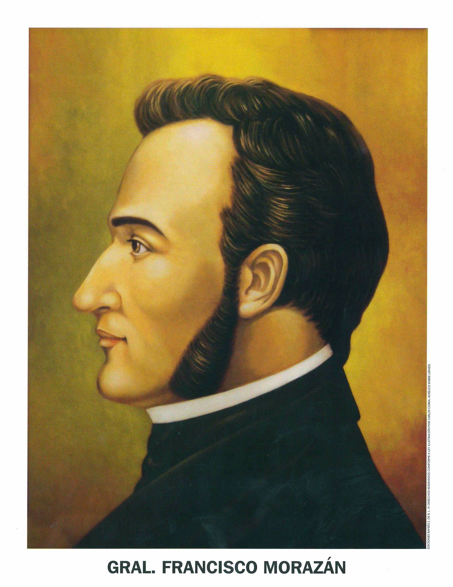
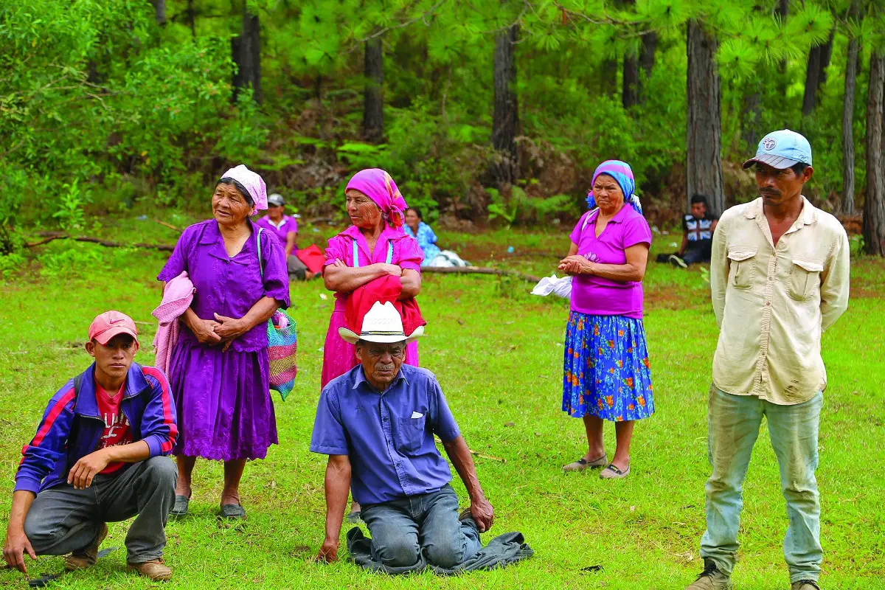
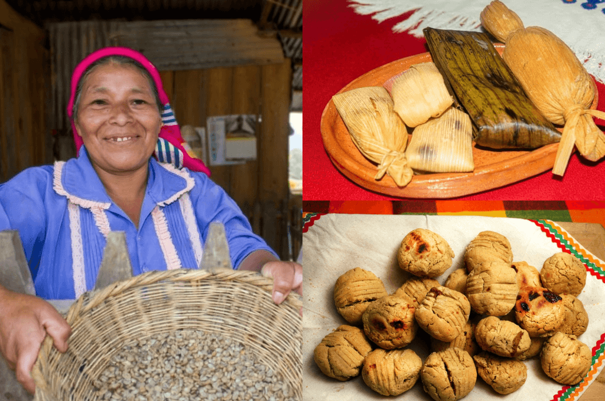
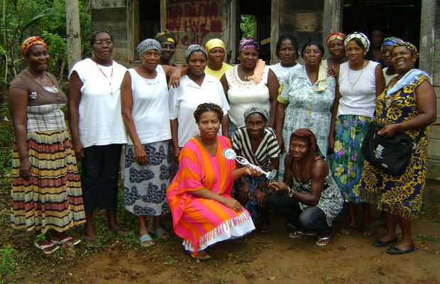
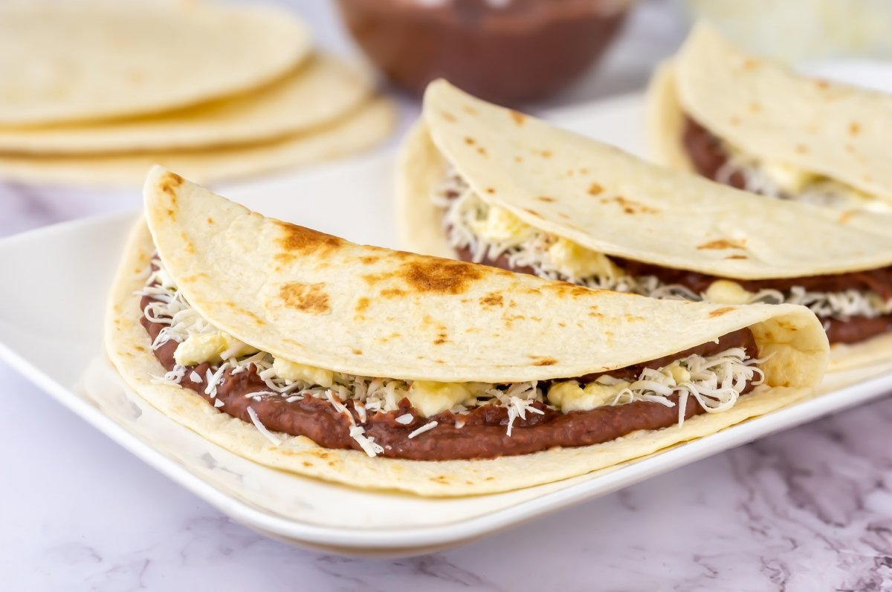
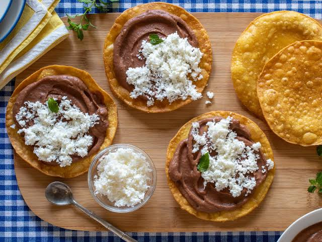
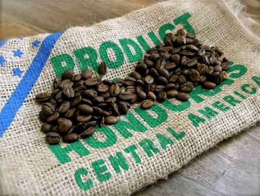

Cultura Hondureña
Francisco Morazan

Francisco Morazan (1972-1842): es considerado el máximo representante del unionismo centroamericano. Nacido en Tegucigalpa, Honduras, defendió la permanencia de la República Federal de Centroamérica, integrada por Guatemala, El Salvador, Honduras, Nicaragua y Costa Rica.
Durante su carrera politica y militar lucho para preservar la Fedecarion Centroamericana, pero los conflictos internos, los intereses regionales y las diferencias politicas provocaron su disolucion. A pesar de ello, Morazan dejo un legado de integracion regional que sigue siendo un simbolo de unidad para los paises centromericanos.
Proceres Patrios y la idea Unionista
Diversos proceres Hondureños compartieron la vision de una Centroamerica unida. Entre ellos estan:
Jose Cecilio del Valle: intelectual hondureño conocido como: el "Sabio Valle", quien promovio la integracion regional y participo activamente en los debates sobre la organizacion politica de centroamerica.
Dionisio de Herrera: Primer jefe de Estado de Honduras, quien apoyo los principios republicanos y federales.
Jose Trinidad Cabañas: discipulo y colaborador de Morazan, defensor de la union centroamericana y de las ideas liberales.
Ramon Rosa: Aunque perteneciente a una generacion posterior, admiro el legado morazanista y promovio reformas inspiradas en los ideales de progreso y modernizacion.
Etnias vivas
Los Lencas

Los lencas son el grupo indígena más numeroso de Honduras y habitan principalmente en la región occidente y centro del país, así como en zonas de El Salvador
Poblacion estimada: Mas de 450,000 personas en Honduras, ademas de comunidades en el salvador
Religion: Practicas catolicas combiandas con un fuerte secretismo y elementos de su "religion antigua" (politeísta y animista), destacando deidades como Itanipuca (Gran Padre) e Ilanguipuca (Gran Madre).
-
Idioma: La lengua lenca originaria se extinguio a mediados del siglo XX, y hoy hablan español (conservando dejos, entonaciones y palabras de herencia lenca), aunque existen esfuerzos comunitarios de revitalizacion
Los Chortis

Los chortís (o maya-chortis) son un pueblo indigena mesoamericano, descendiente directo de la antigua civilización maya cuyo centro político y cultural era la ciudad de Copan.
Poblacion estimada: La gran mayoria concentrada en Guatemala (cerca de 52,000 a 55,000) y el resto en territorio hondureño.
Religion: Es de caracter sincretico, combinando elementos del catolicismo con la cosmovision maya precolombina, con un fuerte enfoque en rituales agrarios dirigidos a la lluvia y las cosechas (como la figura de Chaac o la asociacion con santos catolicos).
-
Idioma: El idioma chorti pertenece a la rama linguistica chol. En Honduras se considera practicamente extinto como lengua de uso cotidiano, con esfuerzos actuales de revitalizacion educativa.
Los Tolupanes

Los tolupanes (tambien llamados xicaques o torrupanes) son uno de los pueblos indigenas mas antiguos de Honduras.
Poblacion estimada: Aproximadamente entre 18,000 y 20,000 habitantes.
Religion: Las creencias espirituales tradicionales de caracter animista y chamanico sobreviven principalmente en los grupos mas aislados de la Montaña de la Flor. Esta cosmovision sostiene que los seres vivos (humanos, animales y plantas) y los elementos de la naturaleza están interconectados y poseen espiritus protectores con los que se mantienen relaciones de reciprocidad. Los chamanes actuan como guias e intermediarios espirituales.
-
Idioma: Hablan el idioma tol (tambien conocido como jicaque), aunque se encuentra en peligro critico ya que un porcentaje muy bajo de la poblacion (principalmente ancianos) lo sigue utilizando.
Los Garifunas

El pueblo garifuna (tambien conocido como garinagu o caribes negros) es un grupo etnico afrodescendiente y de origen indigena que habita principalmente en la costa atlantica de Centroamerica.
Poblacion estimada: Las estimaciones mas citadas situan a la poblacion garifuna hondureña entre 98.000 y 300.000 personas, siendo Honduras el pais con la mayor poblacion garifuna del mundo.
Religion: Practican una mezcla de catolicismo y creencias ancestrales africanas e indigenas, con ceremonias como el dugu.
-
Idioma: Hablan la lengua garifuna (de la familia arahuaca con aportes del caribe, frances, ingles y africano), ademas del español.
Los Misquitos

Los misquitos (o miskitos) son un pueblo indigena de Centroamerica que habita principalmente en la region de La Mosquitia, en la costa Caribe de Honduras (departamento de Gracias a Dios) y de Nicaragua.
Poblacion estimada: Se estima que suman entre 150,000 y mas de 250,000 personas en total, con unas 76,000 viviendo en Honduras y una cantidad similar o mayor en Nicaragua.
Religion: Aunque conservan elementos de su cosmovision ancestral (relacionada con la naturaleza y la "Madre Tierra" o Tasba Misri), la gran mayoria profesa la fe cristiana, destacando la Iglesia Morava (presente desde finales del siglo XIX), la Catolica y denominaciones evangelicas.
-
Idioma: Hablan el misquito, que pertenece a la familia linguistica misumalpa (emparentado con el tawahka), con aportes lexicos del ingles, el español y lenguas africanas.
Gastronomia Nacional
Las Baleadas

El plato mas representativo del pais. Consiste en una tortilla de harina de trigo grande y suave, rellena de frijoles fritos, mantequilla y queso rallado; se le puede agregar huevo, aguacate o carne, aunque hay ciertas combinaciones que para algunos ya no es considerada baleada, un ejemplo de esto es la "baleada especial" que lleva todo lo anterior mencionado agregando chorizo y platano.
Sopa de Caracol

Tradicional de la costa norte y la cultura garifuna, elaborada con caracol, yuca, platano verde (guineo) y una base de caldo con leche de coco.
Catrachitas

Tortillas de maiz fritas cubiertas con frijoles fritos y queso rallado encima.
Atol de Elote

El atol de elote es una bebida tipica artesanal de Honduras. Esta bebida se elabora al procesar o licuar los granos del maiz tierno o recien cortado.
Cafe de altura

El cafe de altura en Honduras se cultiva principalmente a mas de 1200 a 1700 metros sobre el nivel del mar, destacandose por su alta calidad, calidez brillante, dulzor natural y notas citricas o acholotadas.